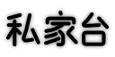

和 SDIMEFix、SDAtmos 同一套做法：墨迹底板、辉光标题、红印章、红飘带、UI 校准角框。标题就是电台图标本身： art/logo.svg 的「私家台」霓虹灯管，点亮成洋红色的招牌。右侧是音乐文件夹变成游戏里的电台 HUD。 HUD 上的歌名用英文：中文歌名在 HUD 上还没在游戏里验证过。
art/logo.svg

SDRADIO
车载电台里多一个台，放你自己的音乐，用起来和原版电台一样 Your own music as a car-radio station · works just like the game's own
MP3FLACOGGWAVM4AWMA
「台」= 电台，取自招牌的最后一个字，灯管和游戏里的图标是同一套。缩到 32 px 时剩下口字框和上面的三角，仍然认得出。
BACKING_9SLICE_LARGE / GRIT
BACKING_UISCALECORNER
SD_LOGO_TEXT_DE
Screens.RadioStations
SDIMEFix